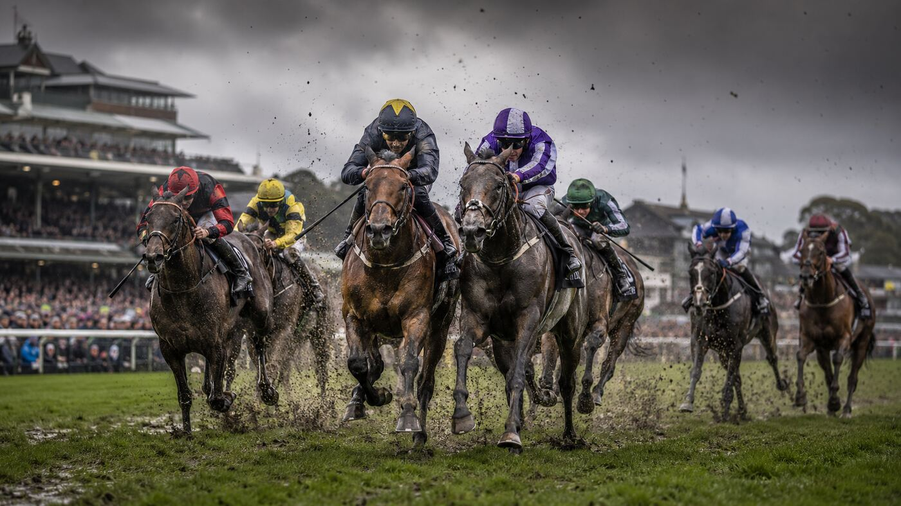

Main Edition · Friday 4 September 2026 · Ascot · Haydock · Kempton · Down Royal
FRIDAY MAIN EDITION · 29 RACES · GOING, NON-RUNNERS AND PRICES CHECKED THIS MORNING
BLUE IS THE COLOUR
Kind Of Blue gets the vote for a bruising Betfair Sprint Cup on heavy ground
Haydock’s Saturday showpiece is down to eight runners—and after 23mm of rain, proven stamina and an appetite for a fight could matter every bit as much as raw speed.
TOMORROW: SATURDAY PREVIEW · Betfair Sprint Cup · Haydock 3.40
KIND OF BLUE CAN GO ONE BETTER

Kind Of Blue has twice finished runner-up in this race and returns with the strongest all-round case. His Group 1 British Champions Sprint success came on soft ground, so the mud holds fewer fears for him than most. Racing Post judges Matt Rennie and Sam Hardy also make him their selection.
Marvelman is the danger after his City of York third, form that is already beginning to strengthen, while James’s Delight is the live outsider: three of his four best Racing Post Ratings have come with soft in the description. Defending champion Big Mojo commands respect, but Saturday’s ground asks a very different question.
THE DAILY WINNER 1–2–3 · KIND OF BLUE · MARVELMAN · JAMES’S DELIGHT
Eight remain after American Affair was withdrawn because of the ground.
BET365 PRICES CHECKED THIS MORNING · PRICES CAN CHANGE
Top Tip
Arctic Thunder
4.48 Ascot 13/2 Bet365
A powerful recent profile and suitable conditions give him the strongest overall case on Friday’s card. He also has firm support from the independent form checks and arrives at a price with room in it.
Strong recent evidence · conditions suit · attractive price
Main Tip
Woven
3.15 Haydock 4/1 Bet365
The veteran relishes testing ground: his domestic turf wins include two on soft and one on heavy. Back on his last winning mark, he has the proven constitution for a demanding afternoon.
Heavy-ground winner · back to a winning mark · widely supported
Main Tip
Starlight Time
6.54 Kempton 7/2 Bet365
Her all-weather evidence stands up particularly well in this company and multiple form judges place her at the head of the field. She is the cleanest percentage play on the evening card.
Strong AW profile · broad form support · clear chance
Today’s Value Bet
Witch Hunter
4.48 Ascot 33/1 EW Bet365
Witch Hunter is exactly the sort of swing the Value Desk was built for: already inside our three before prices were considered and now available at 33/1, with Bet365 paying four places at one-fifth odds. Richard Hannon’s stable has been short of winners lately—an obvious caution—but the generous price and enhanced terms compensate for that risk and make this proven big-field performer worth an adventurous each-way play.
33/1 each-way · four places at 1/5 odds · speculative by design
🎂 Birthday Card?
YELLOW CARD FOR ISOBELLE?
20 TODAY
Apprentice Isobelle Chalmers turns 20 today and could celebrate aboard Yellow Card in Haydock’s 1.30. His Flat form conceals a productive spell over hurdles, including a six-length victory on good-to-soft ground, while Chalmers’ 3lb claim leaves him effectively 9lb below the mark from which he tackled this trip on soft ground last summer. A birthday surprise is not out of the question.
Birthday ride · useful hurdles form · well treated on old Flat mark
🗼 Road To Paris
PARIS, NOT KEMPTON
FOY BOUND
Bay City Roller has been confirmed for the Prix Foy at Longchamp, where he will face Daryz, Uthred and Quest For Magic. George Scott’s colt therefore takes the Arc-trial route rather than meeting Constitution Hill in Saturday’s September Stakes. Their intriguing Flat-versus-Jumps link is parked for now—but the Road to Paris has become very real.
Prix Foy confirmed · Arc trial next · Kempton bypassed
🩺 Thursday’s Cheerful Autopsy
THE THREE FOUND THEM—THE ONES DIDN’T
Thursday was a difficult day at the sharp end. None of the three headline bets won and the Value Desk missed, while only four of our 40 first choices scored. The wider board was healthier: 19 winners were found somewhere inside the Top 3, including Burning Up, Flying Pirate, Diplomata, Sharadd, Angels’ Share and The Third Star.
MAIN-TIP WINNERS0 / 3
NO.1 WINNERS4 / 40
WINNER IN TOP 319 / 40
THE LESSONThe winners were often hiding in plain sight—just one or two places lower than we wanted them. Finding 19 in the Top 3 offered some encouragement, but four winning No.1s tells the real story: Thursday’s finishing order needed to be sharper.
Diagnosis: a flop at the front, a respectable rescue by the three, and no attempt to dress it up.
HEAVY AT HAYDOCK
Haydock is heavy after 23mm of rain and will provide the day’s defining test. Ascot and Down Royal are good; Kempton is standard to slow. All late non-runners supplied before publication have been applied to the rankings.
⭐⭐⭐ Strong confidence · ⭐⭐ Good confidence · ⭐ Caution / competitive. Stars measure confidence in the ranking, not betting value. Bold = our No.1.
Ascot · Good
1.55
Eazy On The Eye · Cancan In The Rain · Stratocracy
⭐⭐
2.30
San Jose · Impasto · Korsakov
⭐
3.05
Clarity · Just Scarlet · Claudette
⭐
3.40
Pure Mint · Does Mary Know · Nobelos
⭐⭐
4.15
Veblen Good · Best Rate · Aalto
⭐⭐⭐
4.48
Arctic Thunder · Classic · Witch Hunter
⭐⭐⭐
5.25
Hambelton · Raging Raj · First Legion
⭐
Haydock · Heavy
1.30
Dance Time · Gentle Warrior · Zimmerman
⭐⭐
2.05
Highland Girl · Girl Scout · Princess Lottie
⭐
2.40
Etonnante · Californian Angel · Marsala
⭐⭐
3.15
Woven · Lord Bertie · Grant Wood
⭐⭐⭐
3.47
Jer Batt · Lipsink · Parisiac
⭐⭐
4.20
Cypriot Diaspora · Folkene · Light The Night Up
⭐⭐
4.53
Naturalia · Lesrico · Flash Bardot
⭐⭐⭐
Kempton · Standard / Slow
5.21
Xochipilli · Hidden Beyond · Sontsivka
⭐
5.54
Huwa Baree · Peaberry · Lunar Blossom
⭐
6.24
Star Mirage · Gilding The Lily · River Nile
⭐⭐
6.54
Starlight Time · Suggy · Fallacious Promise
⭐⭐⭐
7.24
Shiplake · Gilet · Flag Of St George
⭐⭐
7.54
Peter The Wolf · Mission Command · Irish Nectar
⭐⭐
8.24
Educator · Urban Warrior · Must Believe
⭐⭐
Down Royal · Good
3.53
Tango Club · Bit Of A Buzz · Syrah
⭐
4.25
Otsana · Orellana · Forza Magico
⭐
4.58
Whosinterviewinwho · Sovreigns Joy · Letmeentertainyou
⭐⭐⭐
5.30
Someday Somewhere · Fine Line · Romance
⭐⭐
6.00
Sign From Above · Sanctity Of Space · Zoffman
⭐
6.30
Enchanted Lady · Sinbad My Dad · Sweet Baby Zou
⭐
7.00
Miss Australie · Maxwell Smart · Piatra Neamt
⭐
7.30
Connecteo · Without Love · Mystic Rose
⭐